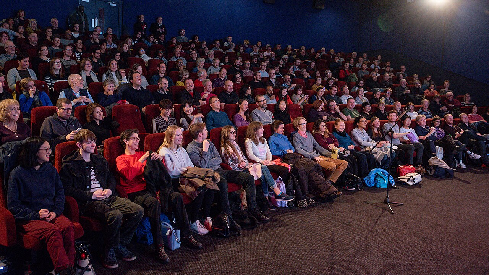

Cinema as Protocol
Cinema-going as cultural infrastructure — why the ritual matters more than the technology.
The Ritual
Before the film starts, something happens that no streaming service can replicate.
You arrive at a building designed for one purpose. You choose seats from a map that represents a physical space you are about to inhabit. You buy popcorn not because you are hungry but because it is part of the ceremony. You sit in a dark room with strangers and collectively agree to pay attention to the same thing for two hours.
This is not consumption. This is participation in a protocol.

Cinema-going is one of the last shared cultural experiences that exists at scale. A concert requires a specific artist. A sporting event requires a specific team. But cinema is universal — the same film plays in Wellington, Auckland, London, and Tokyo. The protocol is the same everywhere: arrive, sit, watch, leave changed. The technology that supports this protocol — the ticketing systems, the seat maps, the scheduling engines — is not just software. It is cultural infrastructure.
The technology platforms that power cinema operations understand this implicitly. Their systems are designed around the specifics of the cinema experience: session-based scheduling (not generic calendar events), seat-level inventory (not general admission), format-aware pricing (IMAX costs more than 2D for the same film at the same time), and a multi-step booking lifecycle that mirrors the psychological journey from browsing to commitment.
What makes cinema technology distinct from generic ticketing is this specificity. A cinema seat is not a concert seat is not an airline seat. A cinema session is not a calendar event. A cinema order is not a shopping cart. The domain types encode cultural knowledge about how people experience cinema — and the developer tooling for cinema should encode that same knowledge.
The Digital Layer
The gap between the physical experience of cinema and its digital representation is where the most interesting developer problems live.
Consider seat selection. A cinema auditorium has spatial properties that matter: the screen is at the front, the best seats are in the middle-back, wheelchair spaces have companion seats adjacent, premium rows have different pricing. A seat map component is not a generic grid — it is a spatial representation of a physical space with cultural conventions about where people prefer to sit.
Consider session scheduling. A matinee showing costs less than an evening showing of the same film in the same screen. Tuesday pricing differs from Saturday pricing. IMAX adds a surcharge. A senior ticket costs less than an adult ticket but more than a child ticket. These are not arbitrary business rules — they reflect decades of cinema economics. A pricing calculator that does not understand matinee discounts, format surcharges, and loyalty tier stacking is not modelling cinema pricing. It is modelling generic e-commerce.
Consider the booking lifecycle. A customer selects seats, but those seats are not purchased — they are held. The hold has a TTL. If the customer does not complete payment within the hold window, the seats return to available inventory. This is not a shopping cart timeout — it is a domain-specific concurrency control mechanism that exists because cinema seats are non-fungible resources. Two customers cannot both purchase seat H7 for the 7:15 PM showing.
The developer tooling for cinema must encode these domain specifics. Generic API clients, generic UI components, and generic event systems miss the domain knowledge that makes cinema technology meaningful. A typed Session interface that carries format, priceFrom, screenName, and isSoldOut is not just a data container — it is a compressed representation of domain expertise.
The Infrastructure Argument
We tend to think of cinema as entertainment. But the economic and social footprint of cinema exhibition tells a different story.
Cinema complexes are among the highest-traffic commercial properties in most cities. They anchor shopping centres. They drive food-and-beverage revenue. They employ thousands of people, predominantly young workers in their first jobs. They are one of the few public spaces where strangers share a focused experience together — a function that sociologists describe as essential to social cohesion.
The technology that enables this is infrastructure in the same way that payments technology is infrastructure. You do not think about payment processing when you buy coffee — but the system that enables that transaction is vast, regulated, and essential to economic activity. You do not think about ticketing technology when you book a cinema ticket — but the system that manages session scheduling, seat inventory, and order processing across thousands of sites is equally complex.
Developer ecosystems grow around infrastructure. They grow because infrastructure, by definition, is something that many different applications build on top of. The cinema platform APIs that manage sessions, orders, and loyalty across an entire exhibition network are infrastructure — and infrastructure benefits disproportionately from developer tooling that makes it easier to build on.
What Cinema Technology Teaches Us
Building developer tooling for cinema has taught me something about domain-driven design that I did not fully appreciate before: the best developer tools are domain-specific.
A generic HTTP client can call any API. A cinema-specific client that provides client.sessions.list({ siteId, date, format }) encodes domain knowledge in its type signature. The developer does not need to read documentation to know that sessions can be filtered by format — the TypeScript completion tells them.
A generic event emitter can dispatch any event. A cinema-specific emitter that provides watcher.on('session.soldout', callback) encodes operational knowledge about what events matter in cinema operations. The developer does not need to guess which state transitions are significant — the event catalogue tells them.
A generic UI component library can render grids and lists. A cinema-specific component that renders an interactive seat map with screen orientation, accessibility states, and click-to-select with multi-selection encodes UX knowledge about how cinema booking interfaces should work. The developer does not need to design the seat selection interaction — the component encodes decades of cinema UX convention.
Domain specificity is not a limitation. It is a feature. The value of developer tooling scales with its depth of domain knowledge, not its breadth of applicability.
Conclusion
Cinema is a protocol — a shared cultural practice with specific rituals, spaces, and conventions. The technology that supports this protocol is not generic software adapted for cinema. It is purpose-built infrastructure that encodes domain knowledge about how people experience cinema.
Developer tooling for cinema should encode the same knowledge. Typed session interfaces, domain-specific event watchers, cinema-aware UI components, and pricing calculators that understand matinee discounts are not just technically correct. They are culturally correct — they demonstrate understanding of the domain they serve.
The developers who build on cinema platforms deserve tools that understand cinema as deeply as the platforms themselves do. That is what cinema-specific developer tooling provides: not generic capability applied to cinema, but domain expertise expressed as code.